6/15/26 - Chitose River
After waking up at the hostel in Hiroshima at 4:50 am, taking a taxi to the bus station, coach bus to the airport, flight to Sapporo, bus to the car rental pickup location, driving the car to a random parking lot in Chitose city, then another taxi (planned to take bus but couldn't figure out the schedule after standing at the bus stop for 20 minutes), I finally found myself on a raft on the Chitose river. The current was pretty darn fast and river quite shallow and fast flowing, and surrounded by trees on both sides. The trees and bends of the river presented some obstacles as the river flowed fast leaving little time to make adjustments. At one point early in the trip there was a bend with a large collection of downed trees on the long side and the current went straight into it. I tried to avoid it by going to the inner part of the bend but it was too shallow and I couldn't get off the main current. Momentarily baffled, I made a split second decision to jump out of the boat into chest deep cold water and avoided two things, going into the downed trees which was the worst scenario as it would likely damage the inflatable raft, and to avoid badly scraping the bottom of the boat on the inner bend if I even managed to get there. That and two high class 2 rapids were the main obstacles along with shallow spots requiring careful observation and portage. But with the river flowing as it was, it was difficult to always spot shallow water so I ended up scraping the raft a couple times. The trip felt a lot longer than 5 miles but was a ton of fun. I made it to the middle of town in no time however there wasnt a good takeout place. Finally there was a bridge and under it a concrete ledge several feet up so I stopped and pulled myself and the raft and gear up onto it, then jumped the nearly 4 foot fence onto a paved walkway area, then headed back to the car.
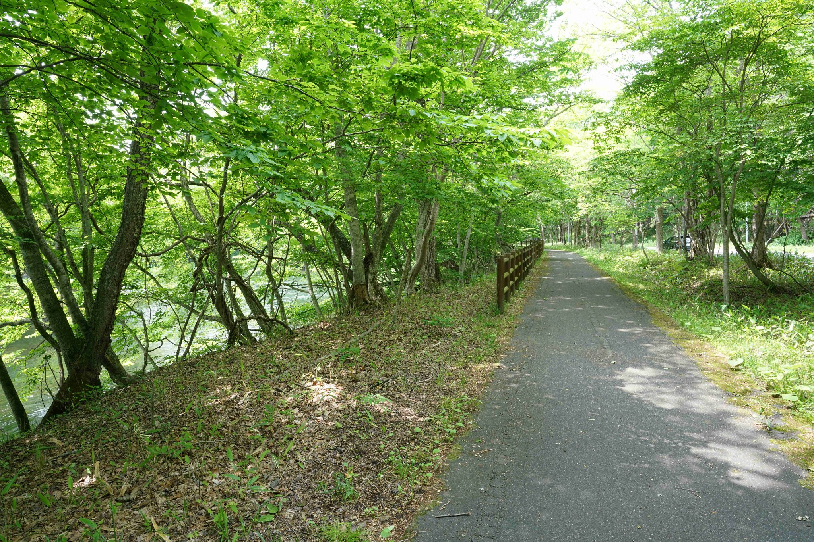
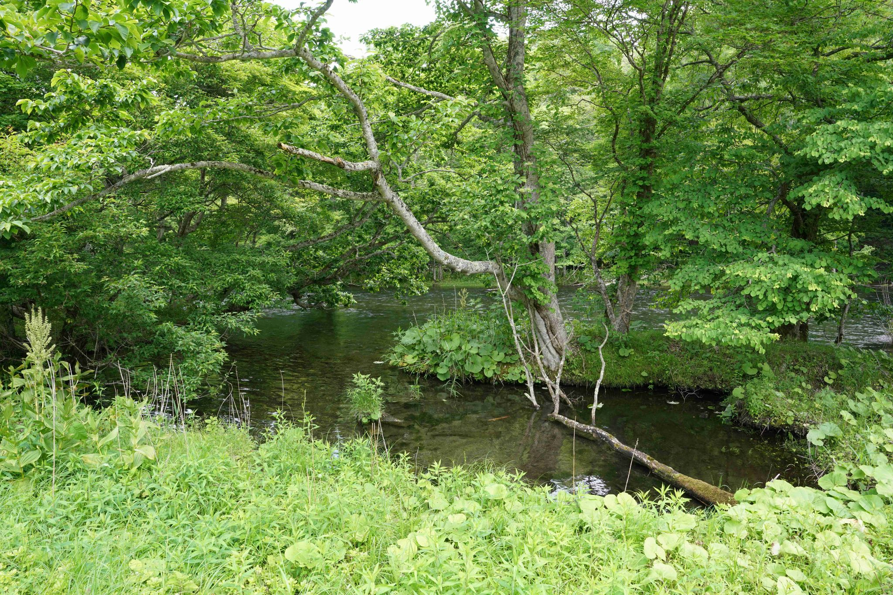
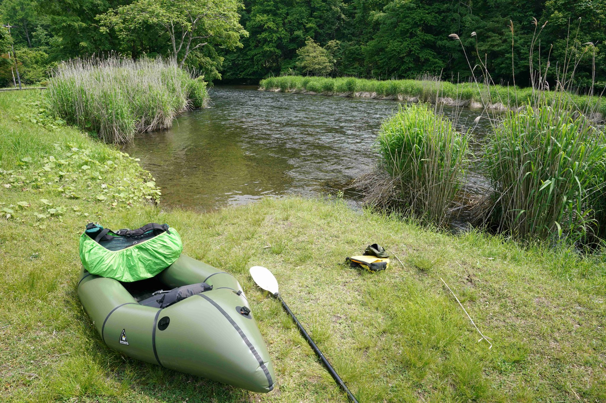
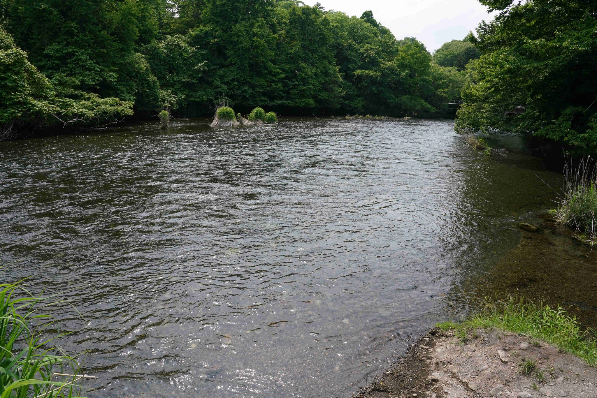
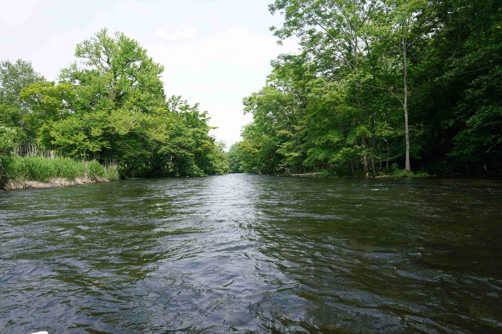
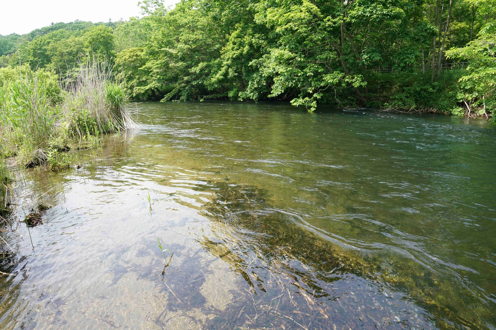
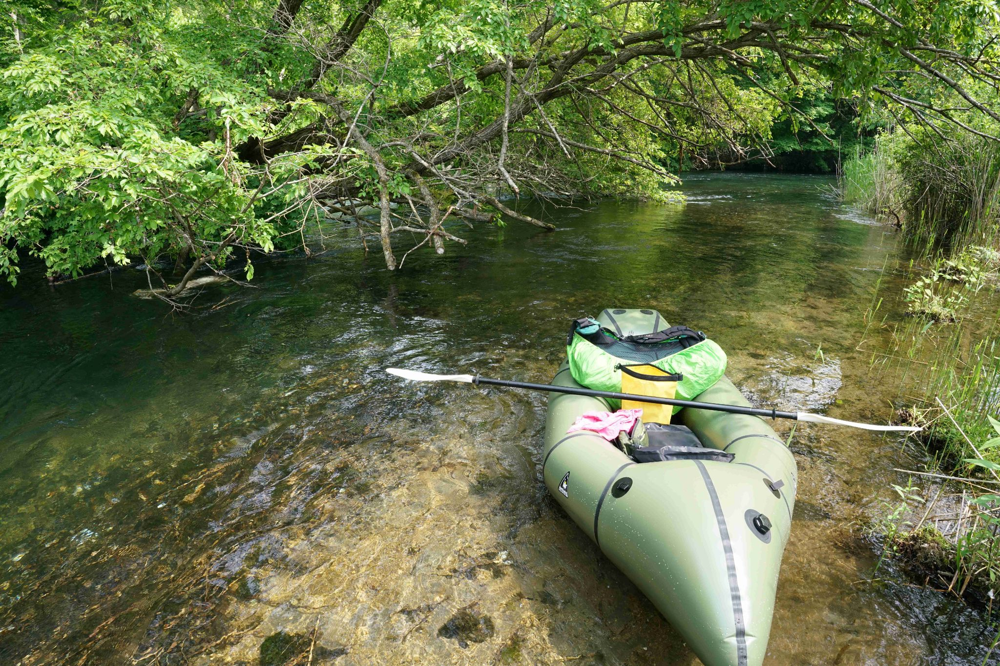
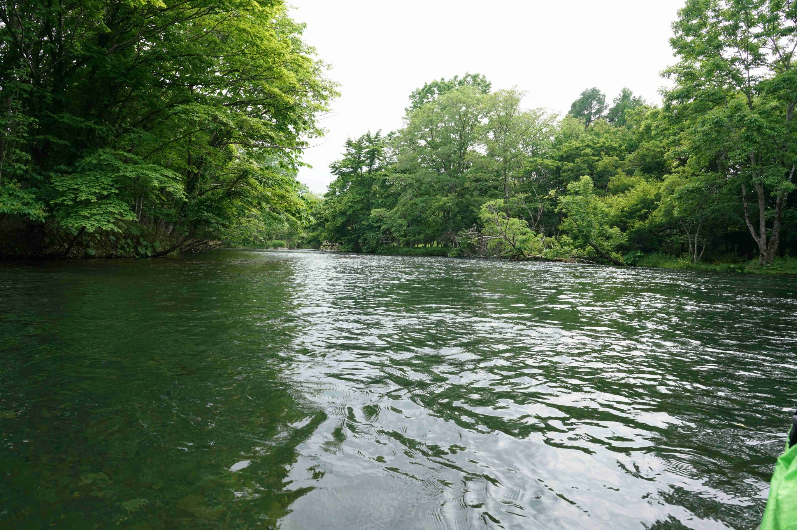
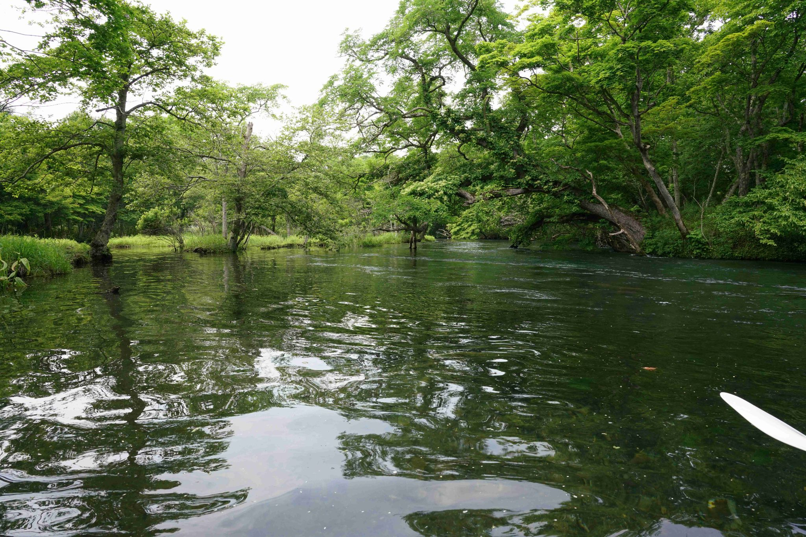
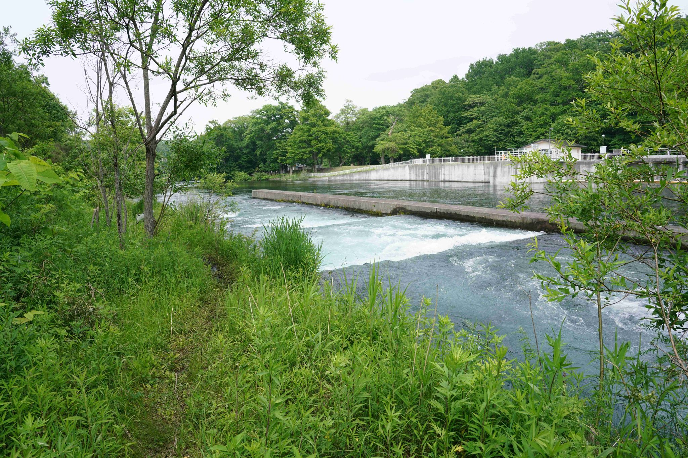
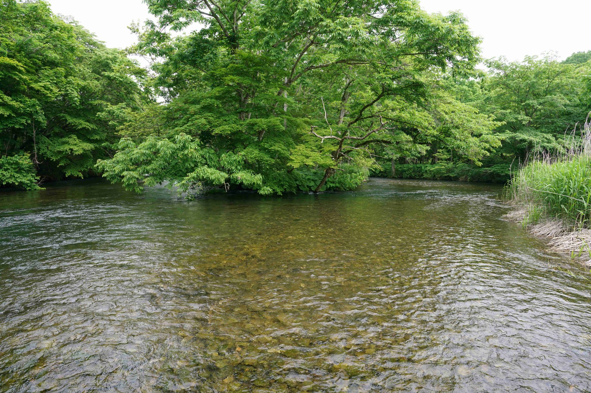
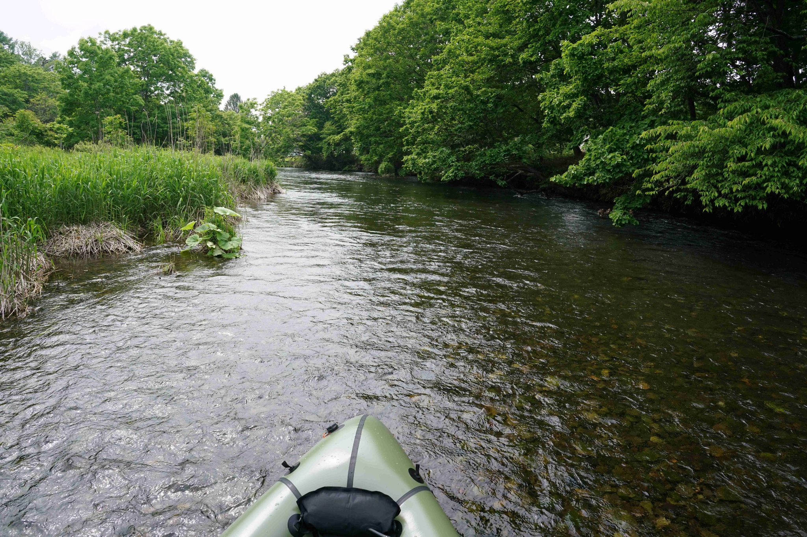
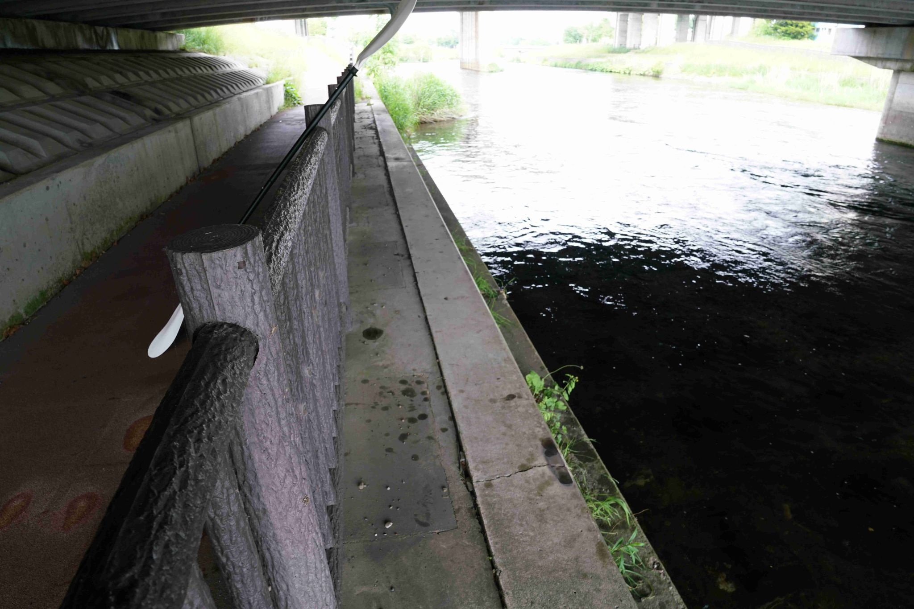
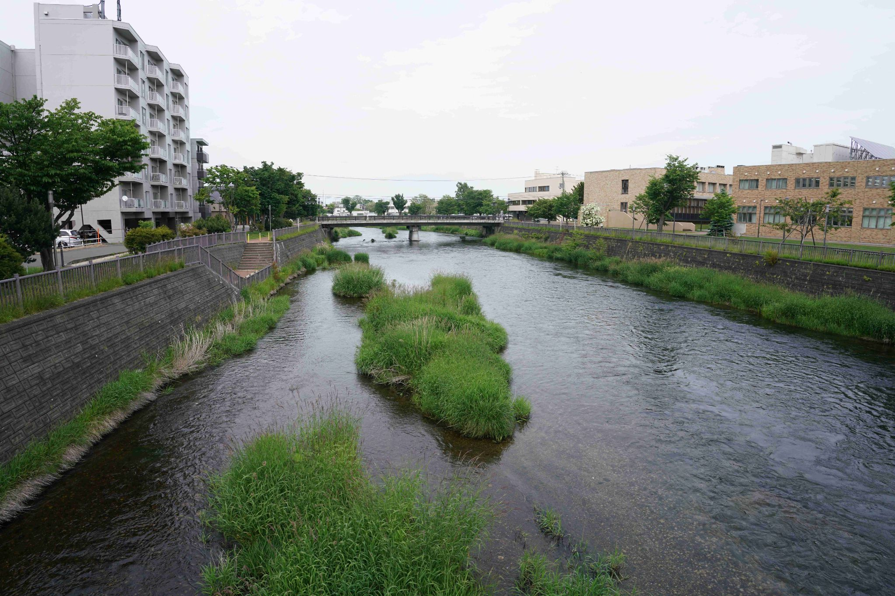